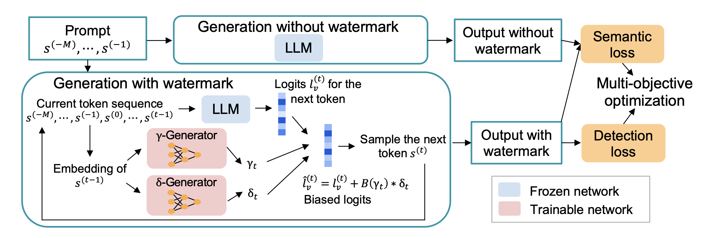
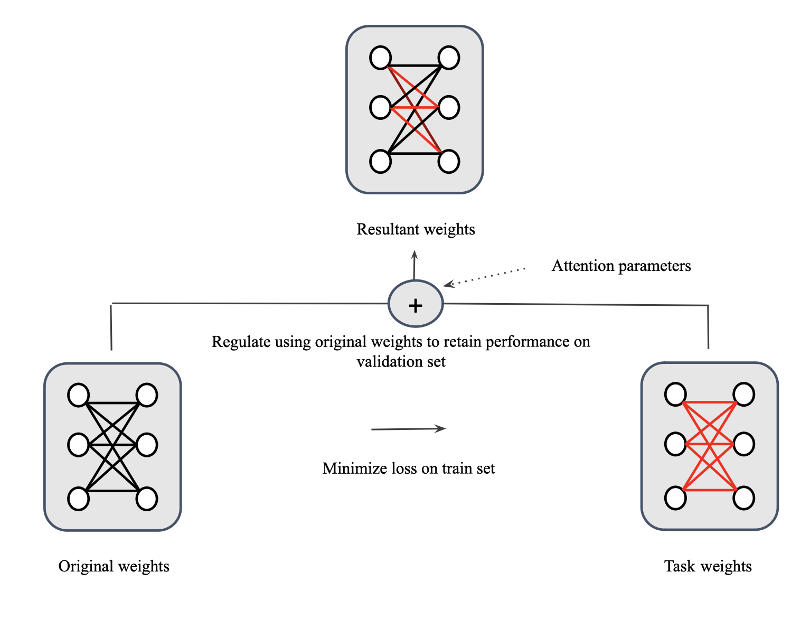
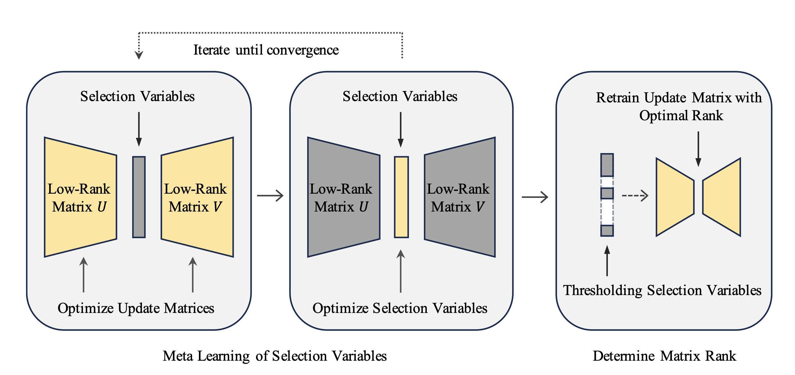
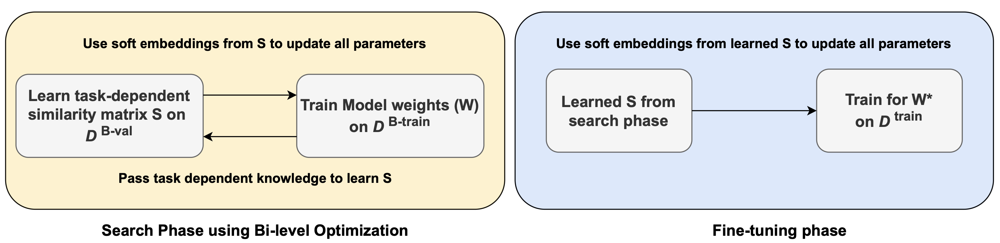
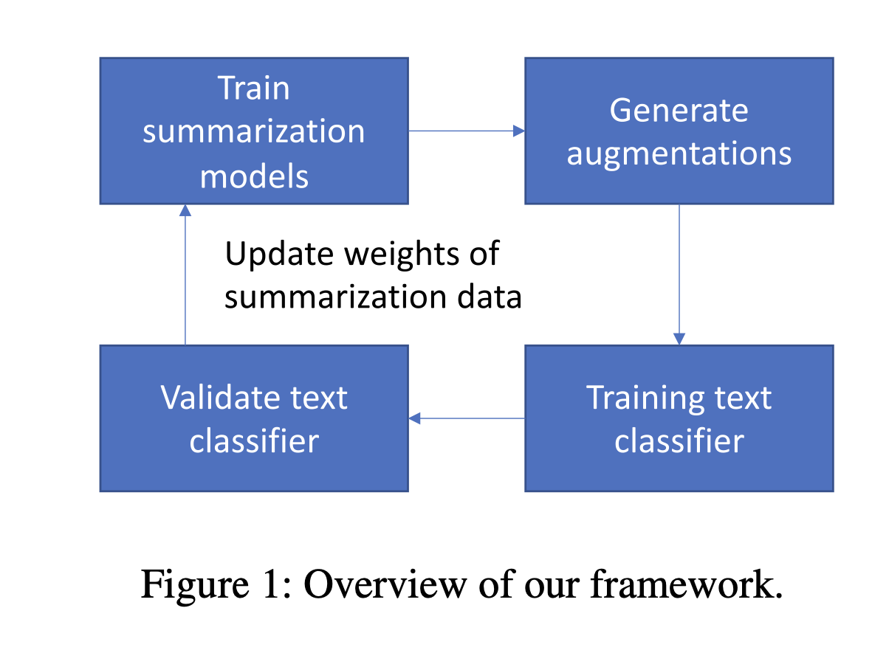

|
Sai Ashish Somayajula I am a PhD candidate in the ECE department at University of California, San Diego advised by Professor Pengtao Xie. The COVID-19 pandemic profoundly impacted me, inspiring my research journey. I realized that an efficiently trained language model for COVID-19 could rapidly analyze data and offer valuable insights for vaccine development, etc. Motivated by this idea, my research focuses on optimizing language models for specialized domains such as healthcare. My long term vision is to leverage these models for scientific discoveries. Training these models for such applications involve unique challenges, such as limited labeled data, the need for models to adapt to the ever-evolving nature of data, and stringent safety standards. Under this bigger umbrella, I specifically developed methods in the following areas: synthetic data generation with meta-learning based feedback mechanism, continual learning in dynamic environments, and the security/safety of large language models (LLMs). I am glad that my research in continual learning has contributed to an NIH-funded project. Grateful to Professor Pengtao for his support! I obtained my Bachelor's degree in Electrical Engineering with a minor in Computer Science and Engineering from the Indian Institute of Technology, Hyderabad. I was fortunate to be advised by Professor Sumohana S. Channappayya and Professor Adity Siripuram. I secured the second-highest CGPA in the B.Tech program across all departments. I was twice awarded the academic excellence award. Email / CV / Bio / Google Scholar / Linkedin / Github Feel free to reach out to discuss ideas—I'd be glad to connect and brainstorm together! |

|
News
More
|
Professional Experience
|
Invited Talks
|
Foundational Models
|
Research Direction |
Watermarking in LLMsWith the proliferation of LLMs in generating synthetic datasets, distinguishing between human-curated and machine-generated texts is crucial to avoid misinformation. This distinction is particularly vital in specialized domains such as healthcare, where the authenticity and reliability of data are of utmost importance. Statistically watermarking LLM-generated text can reliably detect such content. However, prior works face difficulty in achieving both high detectability and semantic quality of the generated texts after watermarking. We explore ways to improve both simultaneously. |
|

|
Token-Specific Watermarking with Enhanced Detectability and Semantic Coherence for Large Language Models
Mingjia Huo*, Sai Ashish Somayajula*, Youwei Liang, Ruisi Zhang, Farinaz Koushanfar, Pengtao Xie International Conference on Machine Learning (ICML), 2024 pdf / code A multi-objective optimization-based token-specific watermarking method to study and improve both watermark detectability and generation quality. |
Continual Learning of Language ModelsIn dynamic and evolving data environments, language models must adapt to new data without losing accuracy on prior data. Traditional fine-tuning of LLMs on new, emerging data might lead to the model losing its prior knowledge of older data. We explore a research direction on how we can efficiently select a sub-network that, when fine-tuned on new data, will achieve maximum performance without significantly losing prior knowledge. |
|

|
Generalizable and Stable Finetuning of Pretrained Language Models on Low-Resource Texts
Sai Ashish Somayajula, Youwei Liang, Li Zhang, Abhishek Singh, Pengtao Xie Annual Conference of the North American Chapter of the Association for Computational Linguistics (NAACL), 2024 pdf / code A bi-level optimization-based approach to finetune an automatically chosen sub-network within pre-trained language models on low-resource datasets to mitigate overfitting and reduce standard deviation. We are applying this method for continual learning in real-world medical application. |
Parameter Efficient Fine-tuning (PEFT) methodsWith the scaling of model parameters, such as transitioning from RoBERTa-large's 355 million parameters to GPT-3's staggering 175 billion parameters, fine-tuning becomes highly expensive in computation. PEFT methods become invaluable in such situations, within which LoRA is very effective. However, the LoRA method uses a predefined rank for each update matrix. We explore the research question of whether we can learn the optimal rank of these update matrices for a downstream task to improve performance. |
|

|
AutoLoRA: Automatically Tuning Matrix Ranks in Low-Rank Adaptation Based on Meta Learning
Ruiyi Zhang, Rushi Qiang, Sai Ashish Somayajula, Pengtao Xie Annual Conference of the North American Chapter of the Association for Computational Linguistics (NAACL), 2024 pdf / code AutoLoRA, a meta-learning framework designed to automatically determine the optimal rank for each low-rank adaptation (LoRA) matrix while parameter efficient finetuning. |
Synthetic Data GenerationIn specialized domains, labeled training data is often limited—especially in cases involving emergent diseases, where timely and extensive data collection poses significant challenges. Methods for synthetic data generation can be invaluable in such scenarios. Within this, I explored two directions: 1) Can we leverage feedback from the downstream model to improve the quality of generated data? 2) Can we synthesize the gradients of unseen tokens in the training dataset in a task-driven optimization without any external knowledge? |
|
|
Improving Long COVID-Related Text Classification: A Novel End-to-End Domain-Adaptive Paraphrasing Framework
Sai Ashish Somayajula, Onkar Litake, Youwei Liang, Ramtin Hosseini, Shamim Nemati, David O. Wilson, Robert N. Weinreb, Atul Malhotra, Pengtao Xie Scientific Reports. Nature Portfolio, 2024 Introduce medical paraphrasing to augment data, coupled with a feedback mechanism. This approach utilizes a data-reweighting-based multi-level optimization framework with a meta-weight-network to enhance the classification performance of long COVID literature. |
|

|
Bi-level Finetuning with Task-dependent Similarity Structure for Low-resource Training
Sai Ashish Somayajula, Lifeng Jin, Linfeng Song, Haitao Mi, Dong Yu Findings of the Association for Computational Linguistics (ACL), 2023 pdf / code A bi-level optimization approach to synthesize gradients of unknown lexical information from known data, leveraging a task-dependent similarity matrix. |
|

|
A Multi-Level Optimization Framework for End-to-End Text Augmentation
Sai Ashish Somayajula, Linfeng Song, Pengtao Xie Transactions of the Association for Computational Linguistics (TACL), 2022 pdf / code / video A data reweighting based domain adaptive feedback mechanism for end-to-end learning of text augmentation and classification models, overcoming traditional data augmentation limitations. |
|
|